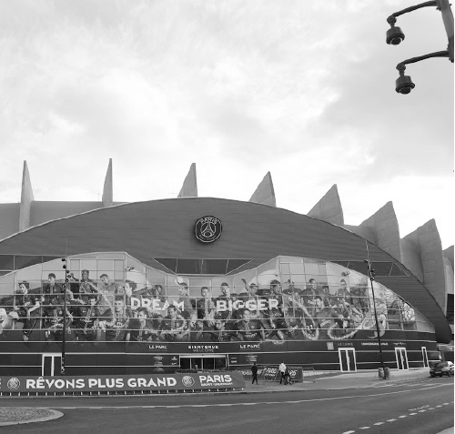

Tôi mê bóng đá lắm. Nhiều khi tôi hối tiếc tại sao mình không trở thành một cầu thủ bóng đá. Niềm đam mê ấy được khởi nguồn từ bố tôi. Khi cúp bóng đá thế giới 1978 diễn ra, tôi mới chỉ hai tuổi. Nhà chúng tôi không có ti vi, đêm nào bố tôi cũng thức đêm sang hàng xóm xem nhờ. Mà đi một mình thì chắc e ngại mẹ tôi nghi ngờ, nên ông vác tôi theo. Phải gọi là vác vì tôi mới hai tuổi mà đã “đô con” lắm, và đêm thì tất nhiên tôi ngủ lăn ra như lợn con. Thế mà đêm nào ông cũng vác tôi đi, đứng hàng giờ nhòm qua cửa sổ nhà hàng xóm để xem những trận cầu bốn năm mới có một lần. Không bỏ trận nào. Ban đầu tất nhiên là tôi ngủ, về sau bị thức giấc vì những tiếng hô của bố, tôi tò mò dõi theo những hình ảnh trên ti vi, rồi dần bị cuốn hút vào môn thể thao triệu người mê ấy. Tôi cũng không bỏ trận nào, dù tôi không hiểu những gì người ta nói như bắn súng trên ti vi. Bốn năm sau, nhà vẫn chưa có ti vi, đến lượt tôi đánh thức bố hằng đêm dậy đi xem nhờ. Bấy giờ thì bố không vác tôi được nữa, mà tôi thì thấp nên toàn phải đu hai tay lên song sắt nhà người ta, vừa xem ti vi vừa tập thể hình, có hôm còn bị kẹt tay vào cửa bầm dập, mà vẫn không chịu bỏ. Bố tôi nhìn thấy thế mà đau lòng, hôm sau về bỏ hết tiền dành dụm ra mua một cái ti vi, kê ngoài sân, xếp ghế như rạp chiếu bóng rồi mời cả xóm đến xem. Ông còn pha trà luộc khoai lên mời mọi người ăn đêm.

Sân công viên các hoàng tử. (Le Parc des Princes) (Ảnh: Tác giả)
Tôi mê xem bóng đá là thế, chơi bóng đá còn hăng say hơn. Chẳng lúc nào tôi rời quả bóng, trừ lúc ở trường. Ngồi học ở nhà cũng phải có quả bóng đá qua đá lại giữa hai chân thì chữ mới chịu vào đầu. Trưa nào tôi cũng đội nắng đi đá bóng dù ăn đòn tét cả mông. Đêm đi ngủ tôi cũng ôm bóng lên giường, mẹ tôi bảo bóng bẩn thế, cấm không cho. Thế là tối nào, dù nắng hay mưa, dù lạnh thấu xương tôi cũng mang bóng ra sân mà kỳ cọ, mà tắm cho sạch sẽ để được ôm bóng ngủ cùng. Từ cấp một đến đại học, lúc nào tôi cũng là đội trưởng đội bóng của lớp, của trường. Đau ốm, mưa bão, thậm chí có khi chân bị bỏng rộp cũng không khiến tôi dừng chơi bóng. Sang Pháp tôi cũng không từ bỏ được niềm đam mê ấy. Đi làm thâu đêm nhưng sáng thứ Bảy nào tôi cũng phải thu xếp thời gian đi đá bóng vài tiếng, rồi chẳng kịp tắm rửa, chỉ thay quần áo qua loa lại chạy đi làm tiếp đến sáng hôm sau.
Bởi thế mà một trong những điểm đến “mơ ước” của tôi khi đặt chân đến Paris là sân vận động Công viên các Hoàng tử (Parc des Princes), sân vận động mà tôi đã từng nghe nhắc đến trong suốt ngần ấy năm như là đích đến của những giấc mơ. Sân vận động này nằm ngay trong lòng nội thành Paris, ở một khu nổi tiếng, vừa gần rừng vừa gần trung tâm. Sân “Hoàng tử” không quá lớn, chứa được chừng năm vạn người, kiến trúc không quá cầu kỳ, nhưng đủ to đẹp để làm bộ mặt cho đội bóng thủ đô PSG và làm sáng ngời những đôi mắt người hâm mộ như tôi.
Nhưng ở chương này tôi lại kể đến sân Công viên các Hoàng tử mà gần như chẳng liên quan gì đến bóng đá, lại cũng không phải là câu chuyện của riêng tôi. Tôi nghĩ đến nó như một phần câu chuyện trong hành trình du học của tôi và rất nhiều người khác, của rất nhiều bạn bè và những thế hệ du học sinh đến Pháp. Và đi du học thì không chỉ có chuyện học, hiển nhiên thế, còn rất nhiều những câu chuyện tình đủ sắc thái: cảm động, đẹp đẽ, bẽ bàng hay thê thảm. Trong câu chuyện này, tôi sẽ gọi hai nhân vật chính của tôi là “chàng” và “nàng”, như thể trong bất kỳ thiên tiểu thuyết lãng mạn nào.
Tôi không nhớ chính xác tôi quen chàng thế nào. Chàng bằng tuổi tôi, vốn không phải sang Paris để đi du học, mà vì bố chàng sang đây công tác mấy năm, chàng lại không được chăm ngoan lắm, sợ ở nhà chơi với bạn xấu sinh hư hỏng nên bố chàng đưa chàng sang Pháp sống cùng. Chàng chỉ đăng ký đi học lấy lệ và ngày ngày cắp cặp ra khỏi nhà để chiều lòng bố, chứ chàng chẳng học hành gì. Để có tiền ăn chơi, ngoài tiền được chu cấp, chàng phải đi làm thêm khắp nơi. Ấn tượng ban đầu của tôi về chàng là rất “ấn tượng”: một gã trai nhỏ bé, trắng trẻo, gương mặt rất thư sinh, thậm chí hết sức hiền lành nhưng ăn mặc rất “ngầu”, đầu trọc lốc. Sau này chàng bảo để đầu trọc thì đỡ tốn tiền cắt tóc, lúc nào tóc dài là chàng dùng tông đơ tự gọt lấy, nghe thì có vẻ tiết kiệm, nhưng vừa kể chuyện, chàng vừa bỏ ra mấy chục euro mua cái vé sổ xố có kết quả ngay, điền xong đi xem thấy trượt, chàng thản nhiên vứt vào sọt rác và điền cái mới. Thường ngày, ở chỗ nào cũng vậy, chàng không bước đi mà lướt đi như “tiên”, vì lúc nào chàng cũng đứng trên đôi roller. Theo sau chàng là một đội thanh niên mặt búng ra sữa, cũng ăn mặc ngầu, đầu trọc, cũng lướt như “tiên” trên các đôi roller. Hồi tôi gặp chàng là những năm bắt đầu của làn sóng du học sinh Việt Nam sang Pháp ồ ạt, trong vài năm, chính phủ Pháp bỗng nhiên mở cửa cho diện sinh viên đi du học tự túc chứ không cần có học bổng như chúng tôi trước đây sang Pháp học. Và thế là ở Việt Nam mọc lên một loạt các công ty “cò du học”, thực chất chỉ là những công ty lừa đảo, vì họ rêu rao có thể xin được suất đi Pháp (trong khi suất đó hoàn toàn miễn phí, chỉ cần đăng ký vào một trường học tiếng bất kỳ nào đó là được có visa), có thể đưa đón và chỉ dẫn sinh viên ở Paris, giúp đỡ trong việc học tập… và thu một khoản tiền lớn của các ông bố bà mẹ luôn chạy theo cái bóng hào nhoáng của “Du học Pháp”.
Chàng là “đại diện bên Paris” của một công ty như thế, một công việc để kiếm thêm tiền ăn chơi của chàng. Và chàng làm công việc của “nhà đại diện”: chàng đón sinh viên ở sân bay, đưa họ về các khu ký túc xá mà bố mẹ họ đã phải trả cho công ty cò với giá gấp đôi giá thực tế. Rồi chàng đưa họ đến trường học tiếng để đăng ký cũng với giá gấp đôi như thế. Sau đó lẽ ra chàng phải “dìu dắt” các em trong học tập, nhưng chàng có học gì đâu mà “dìu dắt”, chàng chỉ biết ăn mặc ngầu, để đầu trọc và cả ngày lượn lờ roller đi dạo phố, đi tiêu tiền thì các “em” của chàng cũng thế. Nhân tiện các em đều là con nhà khá giả, bao luôn chàng đi nhậu, ngồi quán billard… Thương thay cho các ông bố bà mẹ ở nhà nhận tin con đã vào trường, phải nộp tiền học, mua bảo hiểm, phải sắm dụng cụ, đi thăm quan… mà hối hả gửi tiền sang.
Hình như tôi đang “kể xấu” nhiều người, trong đó có bạn tôi. Mà tính tôi không thích kể xấu, dù thật ra tôi chỉ nói thật. Tôi cũng phải nói thật rằng anh bạn tôi, tức là chàng, hoàn toàn không phải là người xấu. Tôi nghĩ chàng là người rất hiền lành và nhiệt tình với bạn bè, chỉ có điều chàng có những suy nghĩ rất đơn giản, mọi thứ đều đơn giản. Thích chơi thì chơi, chẳng việc gì phải lo nghĩ đến tương lai. Bố không cho đủ tiền để chơi thì đi làm thêm, làm cái gì cũng được, có tiền là làm. Còn các em cũng thích chơi hơn thích học, nghĩa là cùng sở thích với chàng thì chàng nhân tiện “dìu dắt” luôn. Hồi đầu chàng rủ tôi làm cùng, tôi thoạt nghe thấy công việc được trả lương đàng hoàng, lại có điều kiện giúp đỡ sinh viên mới sang thì hào hứng nhận lời ngay, nhưng ngay khi biết mức lệ phí mà mỗi sinh viên phải đóng cho công ty cò thì tôi chững lại, đó là một gia tài, đối với những người như tôi, và hẳn là với rất nhiều người, và ngần ấy tiền trả cho những thứ lẽ ra gần như là miễn phí? Tôi cũng tìm cách ngăn cản anh bạn, nói rằng theo tôi việc ấy “có tính lừa đảo” thì chàng nói: “Mày hâm à, có lừa là công ty lừa thôi, tao làm công lĩnh lương mà. Thời gian và ‘kinh nghiệm’ của tao cũng đáng tiền chứ bộ”. Nói chung nói chuyện với những người suy nghĩ đơn giản như chàng rất khó, bởi suy nghĩ của họ, đối với họ, hiển nhiên đã là chân lý.
Bây giờ tôi quay sang kể về “Nàng”. Nàng là một tiểu thư con nhà giàu có, gia giáo. Nàng 18 tuổi, đẹp, kiêu sa. Nàng có vẻ đẹp của cô thiếu nữ 18 tuổi trong sáng, tự nhiên khiến bất kỳ gã trai nào cũng phải mến mộ. Nàng còn cao ráo như người mẫu với một thân hình đầy đặn cân đối hoàn hảo, đúng là vẻ đẹp hoàn thiện. Nàng là công chúa đài các vì nhà nàng giàu, lại là con gái duy nhất nên bố mẹ nàng chiều chuộng, chăm chút hết mình. Nàng chỉ có việc học và chơi đàn piano, nàng chẳng biết gì về cuộc sống.
Trong suốt những năm sau này, tôi đã thấy vô số những tiểu thư, công tử như thế được bố mẹ gửi sang Pháp. Tôi thấy các ông bố bà mẹ ấy thật dũng cảm. Không biết nên gọi đó là dũng cảm hay là thiếu hiểu biết. Nếu nàng mà là con gái tôi chắc là nàng đi đâu tôi phải vác súng săn theo sau mà canh. Bởi nàng đúng là con nai tơ ngơ ngác, da thơm thịt ngọt trong một xã hội đầy rẫy những hiểm họa. Tại sao mọi người cứ hình dung ra rằng đi du học thì tốt, cứ gửi con ra nước ngoài vài năm thì con sẽ thành người, sẽ giỏi giang, lại được thêm cái mác du học, chỉ cần rót tiền vào đầu tư là đủ?
Du học là một môi trường cực kỳ phức tạp và đầy rẫy những chông gai. Thậm chí tôi nghĩ với những thanh niên mới vào đời, nếu không đủ bản lĩnh, quyết tâm và một chút từng trải thì đi du học ở nước ngoài còn nguy hiểm hơn là lao vào cuộc sống “xã hội” ở Việt Nam. Bởi vì khi quanh ta không còn những người thân, ta mất đi chỗ dựa tinh thần to lớn, dù trước đó tưởng như ta không cần đến. Ngôn ngữ thì không rành, giao tiếp khó khăn, chưa nói gì đến chuyện học. Khi học không nổi thì chán, vài anh chán gặp nhau, lại sẵn có tiền, sẵn không có người kèm cặp quản lý, muốn chơi thâu đêm cũng chẳng ai hay thì còn gì “thuận lợi” hơn. Rượu chè, trai gái, ma túy bị quản lý, nhưng những thứ ấy chẳng nước nào cấm triệt để được. Các cô các cậu mới lớn, đột nhiên thoát khỏi cái lồng “gia đình”, vào một môi trường mới đều cất cánh vụt bay lên thật cao, hô hai tiếng “Tự do”, tung mình vào những cuộc phiêu lưu hoặc là để thử cảm giác mới, hoặc là quên đi nỗi buồn xa nhà, hoặc để chứng minh mình có tiền, mình biết chơi…và thường chỉ tỉnh lại (hoặc có thể là dừng chuyến bay lại chứ không bao giờ còn tỉnh được nữa) sau khi rơi từ trên rất cao ấy xuống mặt đất của những thực tế phũ phàng. Những chuyện ấy tôi không vội nói thêm nhiều nữa, tôi trở lại với câu chuyện của nàng.
Thật ra tôi không quen biết nàng hay gia đình nàng. Gia đình nàng có quen biết với gia đình cậu em ở chung căn hộ với tôi. Kể từ khi cậu em của tôi đi du học nước ngoài (hoặc có thể là từ trước đó rất lâu), gia đình nàng chỉ có ước nguyện duy nhất là nàng cũng đi du học.
Nhân tiện có anh họ nàng sang công tác Paris, gia đình nàng nhờ anh tìm người giúp cho nàng được sang học ở Pháp. Không hiểu sao, ông anh nàng sau vài lần đến nhà chúng tôi chơi và nói chuyện, lại nhất nhất chỉ muốn nhờ tôi, chứ không muốn gửi gắm cậu em đã thân quen từ trước. Tôi băn khoăn lắm, không phải vì không muốn giúp đỡ mà vì e ngại tuổi 18 và sự non tơ của nàng qua lời kể của ông anh họ, cũng e ngại vì tôi khi đó đi làm đi học đến 20 giờ mỗi ngày thì không có thời gian lo cho nàng chu đáo. Lúc ấy tôi có bạn gái ở London rồi, cũng e rằng bạn gái sẽ “dị nghị”. Nhưng ông anh họ của nàng cương quyết lắm, và gia đình nàng còn cương quyết hơn, một mực nhờ vả tôi, nói chỉ cần lo cho em sang được, còn mọi chuyện sẽ tự lo ổn thỏa, rằng nàng là một đứa con ngoan và học giỏi, chắc chắn sẽ có tương lai nếu được đi du học. Họ nài nỉ mãi, tôi đành nhận lời.
Vậy là tôi lo đi xin trường, lo hướng dẫn các thủ tục giấy tờ để nàng sang mà không quá tốn kém cho gia đình, dù gia đình nàng chẳng thiếu thốn gì. Nhưng đó cũng là khởi đầu cho một nỗi ân hận của tôi mãi đến sau này.
Nàng sang Paris. Trước hôm nàng sang tôi đã phải lao đi tìm thuê cho nàng một căn phòng, công việc khó khăn nhất trong những bước đầu tiên của một sinh viên đi du học. Bởi nhà cho thuê ở Paris thì thiếu thốn. Người ngoại tỉnh, người nước ngoài đổ dồn về Paris tìm việc, tìm trường và ai cũng cần nhà cả. Cung không đủ phục vụ cầu nên các chủ nhà “kiêu” lắm, không chỉ ra giá cao mà đòi hỏi đủ thứ. Người thuê nhà phải có thu nhập cao gấp ba lần giá thuê nhà (hỡi ôi, sinh viên thì thu nhập làm gì để cao, đến đi làm 20 giờ một ngày như tôi còn không đủ, chưa nói đến chuyện đi làm chui thì cũng chẳng biết chứng minh kiểu gì), họ còn đòi thêm phải có người thu nhập cao và có cơ sở niềm tin về tuổi tác, thành phần gia đình bảo lãnh cho người thuê: sinh viên Pháp thì có bố mẹ, họ hàng, người quen bảo lãnh, chứ sinh viên Việt Nam thì đành chịu. Đi thuê nhà mà bộ “hồ sơ” dày hơn đi tìm việc làm: nào đơn trình bày nguyện vọng, nào sơ yếu lý lịch, nào chứng minh thu nhập, nào giấy chứng nhận của trường, của ngân hàng, của sở cảnh sát, giấy bảo lãnh, giấy chứng nhận thu nhập của người bảo lãnh… Có đủ ngần ấy thứ giấy rồi còn phải cầu nguyện để không gặp phải những người khác đến trước mình, nộp bộ hồ sơ tốt hơn mình. Có lần tôi đọc báo buổi tối, vừa hôm trước có cái nhà mới đăng lên ưu tiên cho sinh viên thuê, hẹn sáng hôm sau 10 giờ bắt đầu cho xem nhà và nhận hồ sơ. Bảy giờ sáng tôi đến, thấy trước cửa vào tòa nhà có ba người đứng chờ thì sung sướng quá, tự nhủ “Con chim dậy sớm kiếm mồi là con chim sẽ bắt được sâu, hôm nay mình chỉ phải ‘tranh đấu’ với ba con khác thôi”. Đứng đó đợi đến hai giờ chiều vẫn thấy ba con chim kia ngơ ngác đứng đó, không nhích thêm được chút nào. Hóa ra, căn hộ cho thuê ở trên lầu bảy thì người xếp hàng đứng từ trên lầu bảy xuống đến đường, mỗi bậc thang là một “con chim” hồi hộp hy vọng như tôi. Khi biết như thế tôi liền đi về, vì biết chắc hẳn trong số hàng trăm “con chim” kia, kể cả những con dậy muộn đến sau tôi, thể nào cũng có con mang đến một bộ hồ sơ tuyệt đẹp, chẳng đến lượt mình.
Sinh viên Việt Nam vì thế chỉ tìm thuê nhà theo những mối quen biết, hoặc thuê lại nhà của những người Việt Nam định cư bên này, ưu tiên cho người Việt thuê để dễ bề “chèn ép”. Phải nói là như thế, dù không phải ai cũng thế. Người Pháp hay người châu Âu khi đi thuê nhà thường đòi hỏi nhiều thứ, ít nhất là nhà phải đạt những tiêu chuẩn tối thiểu về vệ sinh, ánh sáng, sức khỏe… Phòng mà người Việt cho thuê nhiều khi chỉ là căn hầm để đựng đồ, có ô cửa sổ bằng bàn tay, ẩm thấp, gián chuột chạy vòng vòng. Sưởi lúc chạy lúc không, nay hỏng đèn điện mai hỏng thoát nước. Điều kiện như thế chỉ dành cho những sinh viên Việt Nam không có tiền, không hiểu luật thuê lại, chỉ mong có chỗ chui ra chui vào. Mà những chỗ như vậy cũng không phải là sẵn có, vì dạo đó sinh viên Việt Nam bắt đầu ào sang rất nhiều.
Trở lại với nỗi lo thuê nhà của tôi cho nàng. Tôi chạy đôn đáo khắp nơi, vận dụng mọi mối quen biết. Cũng may lúc ấy, sau hơn hai năm ở Paris, nhờ những hoạt động trong giới sinh viên mà hầu hết sinh viên Việt ở Paris đều biết tôi, tôi “cầu cứu” thì họ truyền tai nhau tìm người giúp. Nhờ thế mà tôi được giới thiệu đến một căn hộ của một sinh viên Việt sắp về nước. Căn hộ ở tầng sáu, ngay bên cạnh sân công viên các Hoàng tử, trong một quận nội thành nổi tiếng đẹp và giàu có của Paris.
Khi đến nơi, tôi nghẹn ngào sung sướng: lần đầu tiên tôi được nhìn toàn cảnh sân vận động trong mơ. Từ tầng sáu nhìn xuống, khung cảnh đẹp quá đỗi, tháp Eiffel không quá xa, sân Công viên các Hoàng tử hoành tráng ngay trong tầm mắt, thêm cả các sân tenis của hệ thống giải Roland Garros cùng một rừng cây, công viên, các siêu thị, cửa hàng... Tất nhiên căn hộ nhỏ thôi, nhưng đầy ắp ánh sáng và khô ráo, giá lại rất “sinh viên” nhờ mối quan hệ của người thuê trước. Chỉ có điều duy nhất là căn hộ sau thời gian dài cho thuê, người thuê không ở thường xuyên nên trông hơi cũ, cần phải sửa sang lại, nhất là để đón một nàng công chúa.
Một tuần trước khi nàng sang, tôi bắt đầu nhận nhà. Mỗi ngày tôi đi làm, đi học từ bảy giờ sáng đến mười giờ tối, tan việc tôi lại phải mang thức ăn đến thẳng căn hộ ấy để bóc giấy dán tường cũ, sơn bả lại, trải lại thảm dưới nền nhà, lắp lại cái góc bếp. Tôi làm đến ba giờ sáng, làm xong ngủ luôn dưới nền nhà, mai bảy giờ sáng lại dậy đi làm tiếp. Chẳng hiểu sao tôi khỏe thế, cũng chẳng biết tại sao tôi nhiệt tình đến vậy. Có thể vì lúc mới sang tôi đã chịu nhiều khổ sở cay đắng nên sau này nhìn những sinh viên ngơ ngác đặt chân đến Paris, lại còn trẻ và khờ dại hơn tôi hồi trước, tôi luôn muốn giúp họ hết mức để họ không phải khổ sở đau đớn như tôi. Nhất là một nàng công chúa thì tôi không đành lòng nhìn nàng khổ, dù chưa gặp bao giờ.
Nhưng đến hôm nàng sang thì nhà vẫn chưa sửa xong, tôi lại muối mặt nhờ một người em gái mà tôi quen cho nàng “tá túc” vài ngày trong lúc đợi sửa nhà. Ở được ba ngày thì ngày nào cô bạn tôi cũng gọi điện đến bảo “Anh ơi, anh đưa công chúa của anh đi, em chịu hết nổi rồi.” Khổ nỗi cô bạn tôi cũng từng là một “nàng công chúa”, đi du học khi chưa từng phải động tay vào việc nhà. Sau hơn một năm cô cũng học và làm được những việc cơ bản và tối thiểu, nay lại phải “nuôi” một nàng công chúa khác xem ra còn “tệ” hơn mình ngày xưa, đã chẳng làm gì còn suốt ngày kêu ở bên này không bằng Việt Nam. Lại thêm gia đình của cô công chúa, xót con quá nên gọi điện sang mỗi ngày, không kể ban đêm hay sáng sớm, họ gọi nhờ vào điện thoại cô bạn tôi mà chỉ rối rít đòi gặp con, không được lời cảm ơn, nên cô càng giận. Cũng có thể vì nàng đẹp quá, đẹp thật sự, mà phụ nữ thì không thích phải ngày ngày nhìn thấy người đẹp (kể cả là không đẹp bằng mình) trong nhà của họ. Tôi lại phải vừa thương lượng để kéo dài thêm ít hôm, vừa cật lực lao động để hoàn thành việc sửa chữa. Rốt cuộc đành thức trắng đêm để hoàn thành việc.
Cuối cùng thì tôi cũng có thể đưa nàng đến căn hộ mới. Sau gần hai tuần lao động cực nhọc của tôi, căn hộ trở nên đẹp đẽ, sáng sủa và ấm áp. Với tôi nó như một giấc mơ. Tôi hồi hộp chờ xem thái độ của nàng, như thể đón cô dâu về nhà. Nhưng tôi quên mất là nàng còn chưa phải “nếm mùi đời” của sinh viên du học, nàng mới vừa rời “cung điện” của nàng ở Việt Nam thôi. Nàng đến, đi ra đi vào xem xét, mặt không chút cảm xúc. Hoặc phải nói là nàng vì nể tôi mà cố nén sự thất vọng. Rồi nàng kết luận: “Thôi, ở tạm. Ít hôm rồi anh tìm cho em cái khác, to đẹp hơn”. Tôi nửa muốn cười lại nửa muốn khóc, cố nuốt cục nghẹn xuống, nghĩ rằng rồi dần dần cuộc đời sẽ chỉ cho nàng biết giá trị của những thứ mà nàng đang có.
Nhưng nàng còn có thể thay đổi được vì nàng sẽ tận mắt thấy cuộc sống của chúng tôi bên này, gia đình nàng thì không. Ngày nào tôi cũng nhận được điện thoại, bảo em ra ở riêng rồi, cần phải có ti vi, tủ lạnh, máy giặt, máy tính, máy rửa bát, giường tủ đẹp đẽ đầy đủ, cháu đi mua giúp em. Rồi mở tài khoản ngân hàng, đăng ký học, làm giấy tờ, mua bảo hiểm. Rồi bảo em mới sang, xa nhà, xa bạn nên buồn lắm, cháu phải đến nói chuyện, dắt em đi chơi, làm cho em hết buồn… Tôi đành phải thưa rằng tôi giúp em vì nể mặt cậu anh họ của em và cậu em ở cùng nhà, vì thương em mới sang còn chưa biết gì, nên tôi sẽ đi mua mọi thứ, tạo dựng cơ sở vật chất ban đầu cho cuộc sống mới của em. Chứ tôi bận rộn lắm, và đã có bạn gái rồi, nên cần tôi đến tâm sự giải buồn mỗi ngày hay cái gì “xa xôi” hơn thì chắc tôi không làm được, tôi xin nhận lỗi trước.
Tôi đi mua, nhưng chỉ có một mình, không ô tô, tôi đành vác ngần ấy thứ lên tàu điện ngầm, rồi bê lên tầng sáu không cầu thang máy. Có cái tủ to quá, tôi bê một mình không nổi, chẳng biết nhờ ai, mọi người đi học đi làm cả, chỉ có chàng là lúc nào cũng rảnh, lúc nào cũng nhiệt tình, nên tôi gọi chàng tới giúp một tay. Chàng đến ngay, lỗi của tôi có lẽ cũng là chỗ ấy.
Họ gặp nhau. Chàng ngay lập tức “choáng váng” và rung động mãnh liệt trước vẻ đẹp trong sáng của nàng. Nàng tỏ ra bình thường, vì chàng không quá ấn tượng và nàng còn ngây thơ chưa nghĩ gì. Nói chuyện vài câu thì hóa ra hai người có họ hàng với nhau, mà chưa từng gặp mặt. Tự nhiên câu chuyện giữa hai người thân mật gần gũi hơn hẳn. Nàng tin tưởng tuyệt đối vào ông anh họ, và chàng thì đặc biệt quan tâm chăm sóc cho cô em họ. Tôi cũng thấy yên tâm, vì tự nhiên nàng gặp họ hàng bên này, dù sao cũng có chỗ dựa.
Bẵng đi một thời gian, tôi quá bận rộn nên chỉ thỉnh thoảng hỏi thăm nàng xem mọi việc có tốt không, có cần gì không. Nàng bảo là anh yên tâm, có anh họ em lo nên tôi cũng không để ý đến chuyện gì. Bỗng một hôm, chàng gọi tôi đến nhà để cảm ơn vì tôi đã giúp chàng tìm thấy “tình yêu của đời mình”, chính là nàng. Tôi trợn mắt bảo “Cái gì, chúng mày là họ hàng mà”. Chàng bảo “Tao kệ, tao yêu mất rồi. Nàng cũng yêu tao, thế thôi”. Chàng vẫn đơn giản thế, làm theo cái mình thích, những cái khác không quan tâm. Tôi nói mãi, chàng bảo đã nghiên cứu rồi, gần đủ cách ba đời, lấy nhau được. Thế nào là “gần đủ ba đời”? Tôi hỏi, chàng không biết. Tôi biết làm gì hơn.
Thật lòng mà nói, chàng không có lỗi, nàng cũng thế. Yêu nhau thật lòng thì không bao giờ là tội lỗi cả. Hai người khác giới, gặp nhau rồi nảy sinh tình cảm là lẽ thường tình. Nàng thì thiếu thốn tình cảm, chỗ dựa, quen có người cung phụng, chăm sóc. Chàng thì độc thân, sẵn có thời gian, lại nhiệt tình, gặp một cô gái đẹp như nàng mà không say mới là lạ. Ban đầu là anh em họ, lại càng không cần giữ ý, câu nệ, rồi dần dần mọi thứ đến tự nhiên.
Tình yêu của họ đẹp, tôi thấy vậy. Tình yêu của con người, nếu thật lòng thì lúc nào cũng đẹp. Phải nói là họ si mê nhau và hạnh phúc. Nhìn trong mắt chàng hay nàng tôi đều thấy sáng ngời lên ngọn lửa tình yêu và sự mãn nguyện. Hai người lại hoàn toàn tự do ở với nhau, chắc hẳn đều cảm thấy thỏa mãn. Chỉ có một điều tôi lo lắng là họ si mê nhau quá, mà một người thì ngây thơ chưa có kế hoạch gì cho cuộc đời, người kia thì đơn giản và phải nói là vô trách nhiệm với mọi thứ, nên cả hai chỉ ở đó mà yêu nhau thôi, chẳng làm gì. Nàng gần như không đi học, chàng cũng chẳng đi làm. Tôi gặp cả hai, gặp riêng nàng để nói chuyện, khuyên bảo, đặc biệt là nhắc nhở nàng phải đi học, phải tiếp tục cuộc sống tích
cực chứ không thể chỉ lao đầu vào yêu. Nghe xong, nàng bối rối ngượng nghịu, với những vết cắn của chàng còn in trên cổ, trên má, chứ không phải vì những lời khuyên của tôi. Nàng bảo “Em cũng muốn đi học, nhưng tối nào cũng… ngủ khuya quá ạ”.
Chàng kể với tôi: “Bọn tao thức đêm…, sáng không mở mắt ra được, ngủ đến trưa. Rồi tao dậy, ngồi hút thuốc, chơi điện tử. Nàng dậy, loay hoay nấu mì tôm. Mì tôm nàng chả biết nấu, vừa nát bét, vừa mặn chát, thế mà hai đứa xì xụp ăn vẫn ngon. Ăn xong lại ôm nhau ngủ tiếp. Hạnh phúc vãi đ***” (Tôi xin lỗi, đấy là nguyên văn lời của chàng). Hai người đẹp đẽ sáng sủa đến thế mà sao tình yêu của họ tôi thấy như đang đi vào ngõ cụt, không lối thoát. Họ yêu nhau bản năng quá, dễ dãi quá. Thật lòng mà nói, trong suốt những năm ở Paris, tôi đã gặp không biết bao nhiêu những câu chuyện, những mối tình kiểu bản năng, dễ dãi như thế. Họ không biết, hay còn chưa cảm nhận được vận may của mình khi được đi du học. Có thể vì họ còn trẻ quá, và chưa va chạm với đời. Họ không coi trọng những đồng tiền mà gia đình bỏ ra đầu tư thì tôi có thể hiểu được, vì họ chưa từng vất vả kiếm tiền, bố mẹ họ có thể cũng như vậy, nhưng họ không coi trọng cả thời gian, tuổi trẻ và tương lai của mình thì tôi không hiểu. Họ chỉ sống ngày hôm nay chứ họ không nghĩ đến ngày mai. Tôi cũng không hiểu những ông bố bà mẹ bằng mọi giá đưa, (thậm chí phải gọi là “tống”) con mình đi học nước ngoài mà không nhìn lại xem liệu con mình có đủ khả năng sống một mình và vượt qua những khó khăn, cám dỗ của cuộc sống đơn độc nơi đất khách quê người hay không.
Rồi gia đình nàng cũng biết về chuyện tình của nàng và biết về chàng. Họ còn là họ hàng nên chẳng khó gì để biết quá khứ ăn chơi và những “chiến tích” của chàng. Họ cũng biết rằng nàng không học hành gì, chỉ say mê với tình yêu mới. Vậy là họ tìm mọi cách ngăn cản. Họ gọi cả tôi. Nhưng tôi làm gì được. Tôi đã cố gắng khuyên bảo rồi. Tôi còn có cả cuộc đời riêng phải lo toan, nghĩ ngợi.
Chỉ một thời gian sau, gia đình báo nhà có việc, nàng phải về gấp. Và nàng về, rồi bị giữ ở nhà và không bao giờ sang lại nữa, dù việc học hành sau gần hai năm còn chưa kịp bắt đầu. Gia đình nhờ chúng tôi giải quyết hợp đồng thuê căn hộ và bán tống bán tháo hoặc đóng gói những đồ đạc còn lại của nàng rồi gửi về nhà.
Tôi trở lại căn hộ ấy, lòng đau đớn. Đau đớn không chỉ vì khi đến nơi, căn hộ vẫn còn đẹp như mơ, vì ngay lúc đó, tôi cùng hai người bạn nữa còn đang thuê chung một căn hộ, chắc hẳn bạn còn nhớ: ở ngoại ô, một căn phòng 9m vuông, lạnh đến nỗi sáng mùa đông, tôi phải gồng mình ngồi dậy với một đống chăn đắp lên trên nặng hơn chục cân, ẩm ướt đến nỗi hơi nước đọng lại trên các đường ống nước suốt ngày đêm nhỏ xuống tí tách, thơ mộng như ở trong hang động. Mà tôi thì không có đủ tiền để một mình thuê lại căn hộ đẹp đẽ ấy của nàng. Tôi đau đớn vì chứng kiến một cô gái trẻ, vừa mất đi hai năm tươi đẹp nhất của cuộc đời để từ nay dấn thân vào một cuộc sống phức tạp và chắc chắn nhiều buồn khổ. Đấy là không tính đến phần chi phí cho hai năm du học có lẽ là cả một gia tài với rất nhiều người. Tôi không biết lỗi tại tôi, tại bố mẹ nàng, tại nàng hay tại chàng, chắc là ai cũng có lỗi. Nghĩ vậy, tôi đau lòng ghê gớm.
Tôi lại đứng trên gác cao mà nhìn xuống sân Công viên các Hoàng tử, lung linh, đẹp đẽ. Tôi nghĩ đến niềm đam mê trái bóng của mình. Vì đam mê bóng đá mà nhiều khi tôi làm những việc khó khăn với một đứa trẻ. Tôi nghĩ đến hàng ngàn, hàng chục ngàn đứa trẻ từ khắp mọi miền nước Pháp, từ mọi nơi trên thế giới, mỗi năm đổ đến câu lạc bộ PSG để thi tuyển. Trong số ấy có bao nhiêu em được chọn, trong số những em được chọn ấy có bao nhiêu em vượt qua được những năm luyện tập, sát hạch, vượt qua được những khó khăn ở một thành phố thơ mộng nhưng đắt đỏ để trở thành cầu thủ. Cuối cùng cũng chỉ có mười một người được chơi trong sân vận động đáng mơ ước ấy. Đó là chưa kể đa phần trong số mười một người lại được mua về từ nơi khác.
Mười một người ấy có thể không phải là những người giỏi nhất, có điều kiện nhất hay khỏe mạnh nhất. Nhưng tôi chắc chắn mười một người ấy đến Paris với một niềm say mê và nhất là, với một quyết tâm và niềm tin mãnh liệt. Tôi cũng chắc đó là những người can trường nhất, biết chịu đựng và biết vượt khó. Họ cũng yêu, cũng chơi và cũng đam mê, nhưng họ biết mình là ai và đang làm gì, cần phải làm gì.
Những người đi du học không nhất thiết sẽ trở thành ngôi sao sáng hay cái gì lung linh như được đứng trong sân vận động kia, giữa trăm ngàn máy quay và người hâm mộ. Nhưng cuộc chiến đấu có lẽ cũng không kém phần khó khăn. Những người có thể trụ lại, có thể hoàn thành những khóa học và giành được bằng cấp với kiến thức thực sự, đều ít hay nhiều là những “vận động viên”, cả trí óc lẫn tâm hồn, thể xác. Sự “đào thải” của du học cũng mạnh mẽ, tàn nhẫn chẳng kém gì câu lạc bộ PSG. Đằng sau hàng chục ngàn, hàng trăm ngàn những cuộc chia ly ở sân bay, nơi mà cả gia đình hớn hở và kỳ vọng tiễn một người đi, có biết bao gia đình phải đón về, lôi về một “thất bại” (kẻ bại trận?). Tiền mất, thời gian mất, tình cảm cũng mất mà thứ thu lại nhiều khi chỉ là cái danh hão gói gọn trong hai từ “Du học”. Có biết bao bà mẹ tiễn con đi vẫn còn đang khắc khoải chờ đợi, vẫn còn hy vọng lo lắng chờ con “chiến thắng trở về”, như mẹ tôi.
Trong suốt những năm ở Paris, tôi đã chứng kiến biết bao sinh viên phải bỏ về giữa chừng vì không đủ tiền, không đủ khả năng theo học, vì không chịu được áp lực. Tôi đã xót xa nhìn thấy bao nhiêu bạn bè vì ham kiếm tiền hoặc vì không vượt qua nổi khó khăn của việc học hành mà chấp nhận đánh đổi trình độ đại học để đi làm thuê cho các tiệm ăn, nhà hàng mãi mãi không gắng gượng lên được… Tôi đã từng viết thư, giúp một người em mà tôi cưu mang, khuyên bảo trong suốt nhiều năm để theo đuổi việc học. Nhưng cuối cùng cũng không học nổi, gia đình bán cả nhà đi để chu cấp cũng không đủ, muốn quay về Việt Nam phải nhờ tôi viết thư xin viện trợ của chính phủ Pháp để mua vé máy bay. Tôi đã gặp lại ở Hà Nội đứa em của gia đình bạn mẹ tôi, bỏ dở việc học vì gia đình không chu cấp nổi chi phí, bán sạch cả nhà, khi trở lại Việt Nam không bằng cấp, không vốn liếng, phải lấy cái xe máy cuối cùng còn lại trong nhà để đi làm xe ôm.
Tất thảy, hết thảy những điều đó đều rất thật, còn trăm ngàn câu chuyện nữa mà tôi không bao giờ có thể kể hết. Không phải để tung hô vài thành công nhỏ bé của mình mà để tự bảo mình còn phải cố gắng hơn nữa, không phải để “dìm hàng” người khác mà là để thông cảm, chia sẻ với họ, càng không phải để nản lòng các bạn trẻ đang và sẽ đi du học nước ngoài. Bởi cũng có ngàn vạn du học sinh đã thành công, đã vượt qua số phận của mình hoặc vượt qua vô vàn những cạm bẫy, những khó khăn để hoàn thành mục đích của mình, thậm chí làm rạng danh gia đình và đất nước. Tôi chỉ muốn những người bắt đầu cuộc hành trình ấy, họ, gia đình của họ biết những sự thật, những khó khăn đón đợi để xác định cho mình quyết tâm và những cố gắng cho một cuộc chiến kéo dài và khốc liệt. Tôi muốn các bạn trẻ ra đi với những ước mơ và niềm say mê, nhưng đừng quên trong hành trang của mình lòng dũng cảm, sự cố gắng và niềm tin ở ngày mai.